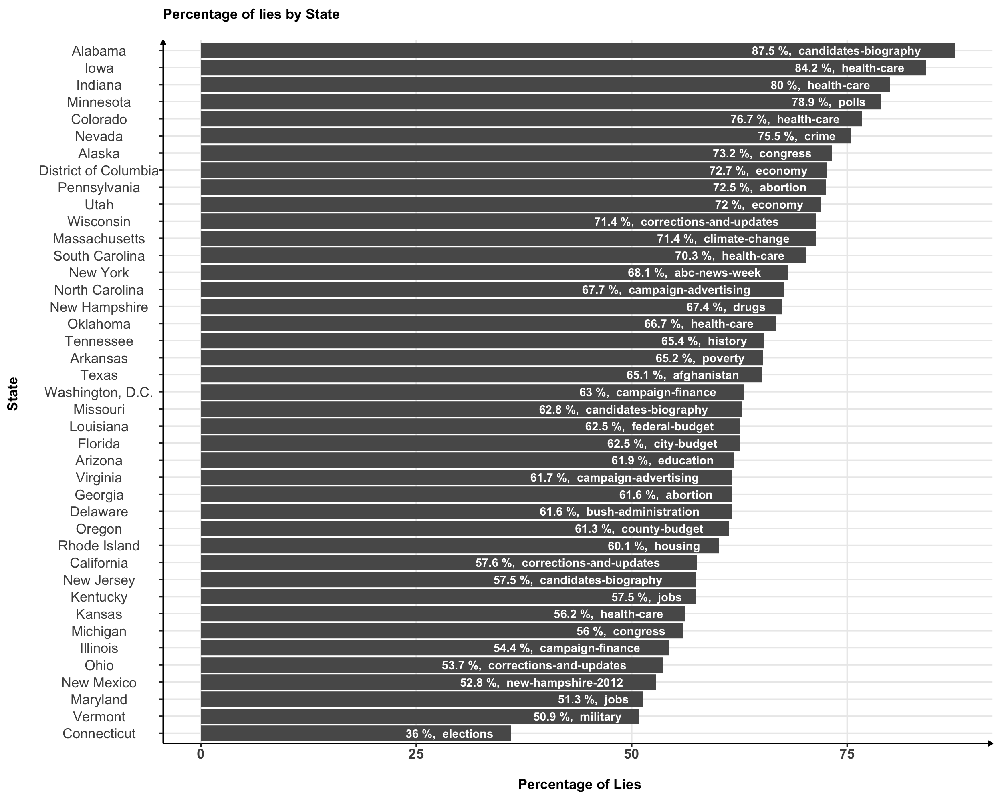
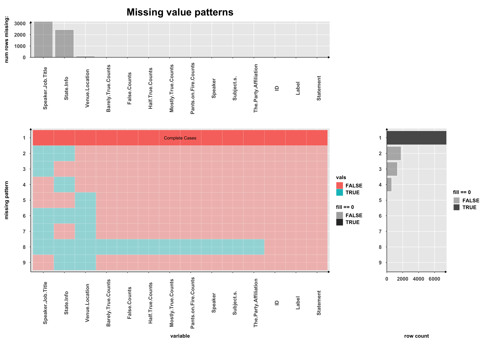

Chapter 4 Missing values
Dataset:-
Liar dataset is used for the fake news detection having 12,800 human labelled short statements in various contexts related to politics. The dataset is used as a fact-checking research and each statement is evaluated by the politifact.com editor for its truthfulness. Automatic fake news detection is a challenging problem in deception detection, and it has tremendous potential on real-world political and social impacts.
List of Features in Table
ID | Label | Statement | Subject | Speaker | Speaker Job Title | State Info | Party Affiliated | Total Credit History Count | Barely True Counts | False Counts | Half False Counts | Mostly True Counts | Fire Counts | Location/Venue
Missing values by column for the test liar dataset
## Speaker Job Title State Info Venue/Location
## 266 206 13
## ID Label Statement
## 0 0 0
## Subject(s) Speaker The Party Affiliation
## 0 0 0
## Barely True Counts False Counts Half True Counts
## 0 0 0
## Mostly True Counts Pants on Fire Counts
## 0 0- It is important to note that Label column (independent feature) doesn’t have missing values for the test dataset.
- Most of the columns don’t have missing values
- Speaker Job Title has maximum missing values - 266
Top 20 row-id having maximum missing values
## 279 539 708 12 23 24 27 33 41 43 50 51 71 73 81 90 101 106 113 114
## 3 3 3 2 2 2 2 2 2 2 2 2 2 2 2 2 2 2 2 2- Here we observe that the maximum values missing per row was 3. Row_id 279 here has 3 features which has missing values
- Please note, we handpicked top 20 rows
Heatmap

- Since we noticed that “Speaker Job Title” and “State Info” has missing values, we used heatmaps to see if we can observe any pattern. Below is one of the following pattern we noticed :-
- For both “Speaker Job Title” and “State Info” feature, we saw following labels {True, Pants-Fire and False} to be completely missing.
This means that if we group StateInfo & Label and Speaker Job Title & Label, then the groups having TRUE, PANTS-FIRE and FALSE Labels will be completely empty.
Ratio of Missing Values for each Label in Test dataset
## # A tibble: 6 × 2
## Label `Speaker Job Title`
## <chr> <dbl>
## 1 barely-true 0.266
## 2 false 0.251
## 3 half-true 0.229
## 4 mostly-true 0.224
## 5 pants-fire 0.407
## 6 true 0.233Percentage of Missing Values for each Label in Test dataset

 * This graph ideally would have missed a feature if all the values were missing for it, but here for our dataset, we didn’t observe any feature for which all rows in the column were missing. * In this graph, Speaker Job Title and State Info was quite evident, but at the same time, this graph also tells us that there were few values missing for the Venue/Location.
## [1] "nothing"
## [2] "Speaker.Job.Title"
## [3] "State.Info"
## [4] "Venue.Location"
## [5] "Speaker.Job.Title, State.Info"
## [6] "Speaker.Job.Title, Venue.Location"
## [7] "Speaker.Job.Title, State.Info, Venue.Location"- We notice the following pattern :-
- The maximum rows in dataset have none of the features missing.
- Next, we have a pattern for rows having Speaker Job Title and State Info missing
- Next in order, we have rows which have only Speaker Job Title, only State Info and only Venue/Location missing.

- Following are the patterns observed :- Column-Wise
- Missing Value Order :- Speaker Job Title > State Info > Venue/Location
Row-Wise Patterns 1) The maximum rows in dataset have none of the features missing. 2) Next, we have a pattern for rows having Speaker Job Title and State Info missing 3) Next in order, we have rows which have only Speaker Job Title, only State Info and only Venue/Location missing.
- Note, we imported this package from github - https://github.com/heike/extracat#installation
 * This is missing value plot for our dataset similar to the question2
* The first plot on the top shows % of missing value for each feature
* The second plot on the bottom (both left and right) and rigth) shows various pattern
–> Most of the rows in the dataset has no missing values
–> Next, we have a pattern for rows having Speaker Job Title and State Info missing
–> Next in order, we have rows which have only Speaker Job Title, only State Info and only Venue/Location missing.
* This is missing value plot for our dataset similar to the question2
* The first plot on the top shows % of missing value for each feature
* The second plot on the bottom (both left and right) and rigth) shows various pattern
–> Most of the rows in the dataset has no missing values
–> Next, we have a pattern for rows having Speaker Job Title and State Info missing
–> Next in order, we have rows which have only Speaker Job Title, only State Info and only Venue/Location missing.
Ratio of Missing Values for each “The Party Affiliation” in Test dataset
## # A tibble: 16 × 3
## `The Party Affiliation` `Speaker Job Title` `State Info`
## <chr> <dbl> <dbl>
## 1 activist 0 0
## 2 business-leader 0 0
## 3 columnist 0.167 0.167
## 4 constitution-party 0 0
## 5 county-commissioner 0 0
## 6 democrat 0.173 0.0896
## 7 government-body 1 0
## 8 independent 0.167 0.0833
## 9 journalist 0.125 0.375
## 10 libertarian 0.2 0.4
## 11 newsmaker 1 0
## 12 none 0.545 0.693
## 13 organization 0.895 0.474
## 14 republican 0.184 0.0772
## 15 state-official 0 0
## 16 talk-show-host 0 0.333Percentage of Missing Values for each Label in Test dataset

Heatmap
** Here we took another feature “The Party Affiliation” and using heatmap, tried noticing missing patterns for this feature. ** The Speaker Job Title had completely missing values for the following “The Party Affiliation” feature[“Organization, none, newsmaker, journalist, government-body and democrat”] ** The State Info was completly missing for the following “The Party Affiliation” feature [“none”, “journalist” and “democrat”]
Number of Missing Values of Speaker Job Title by State_Info grouped by Label

- For most of the states, the label half-true and true have zero missing values
- Florida State has maximum missing values for the label missing true.
- Here we also had missing values in state, which we categorized has Unknown, which apparently together also has max missing values